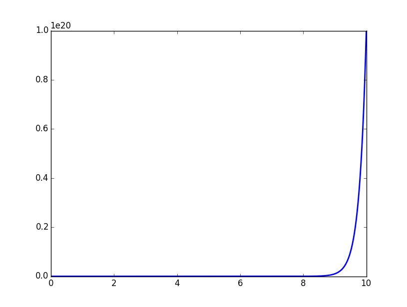本文是《统计学习方法》第4章的笔记，用图形补充说明了条件概率分布计算时可能引发的维数灾难，在文末用Python实现了一个基于贝叶斯文本分类器的简单情感极性分析器，可以分析中文句子的情感极性。
朴素贝叶斯法是基于贝叶斯定理与特征条件独立假设的分类方法。训练的时候，学习输入输出的联合概率分布；分类的时候，利用贝叶斯定理计算后验概率最大的输出。
朴素贝叶斯法的学习与分类
基本方法
设输入空间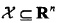为n维向量的集合，输出空间为类标记集合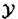={c1……ck}。输入特征向量x和输出类标记y分属于这两个集合。X是输入空间上的随机变量，Y是输出空间上的随机变量。P(X,Y)是X和Y的联合概率分布，训练数据集
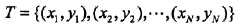
由P(X,Y)独立同分布产生。
朴素贝叶斯法通过T学习联合概率分布P(X,Y)。具体来讲，学习以下先验概率：
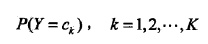
以及条件概率分布：
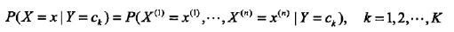
于是根据联合概率分布密度函数：
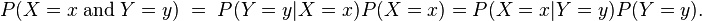
学习到联合概率分布P(X,Y)。
而条件概率分布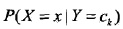的参数数量是指数级的，也就是X和Y的组合很多，假设xj可能取值Sj个，Y可能取值有K个，那么参数的个数是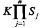。特别地，取xj=S，那么参数个数为KSn，当维数n很大的时候，就会发生维数灾难。
豆知识：维数灾难
一维空间中，把一个单位空间（退化为区间）以每个点距离不超过0.01采样，需要102个平均分布的采样点，而在10维度空间中，需要1020个点才行。计算方式用Python描述如下：
- dimensionality = 10
- print 1 / (0.01 ** dimensionality)
也可以如下可视化：
- # -*- coding:utf-8 -*-
- # Filename: dimensionality.py
- # Author：hankcs
- # Date: 2015/2/6 14:40
- from matplotlib import pyplot as plt
- import numpy as np
- max_dimensionality = 10
- ax = plt.axes(xlim=(0, max_dimensionality), ylim=(0, 1 / (0.01 ** max_dimensionality)))
- x = np.linspace(0, max_dimensionality, 1000)
- y = 1 / (0.01 ** x)
- plt.plot(x, y, lw=2)
- plt.show()
可视化图像：
这种指数级的复杂度增长被称为维数灾难。
看完这个图大概就能理解为什么条件概率分布无法计算了。
为了计算它，朴素贝叶斯法对它做了条件独立性的假设：
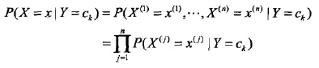
也就是各个维度的特征在类确定的情况下都是独立分布的。这一假设简化了计算，也牺牲了一定的分类准确率。
基于此假设，以及贝叶斯定理，后验概率为：

分母其实是P(X=x)，等同于枚举ck求联合分布的和：∑P(X=x,Y=ck)，此联合分布按公式拆开，等于上式分母。
将独立性假设代入上式，得到：
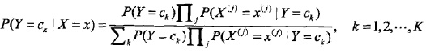
朴素贝叶斯分类器可以表示为：
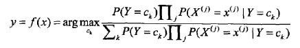
也就是给定参数，找一个概率最大的ck出来。注意到上式分母其实就是P(X=x)，x给定了就固定了，跟ck一点关系都没有，所以分母可以去掉，得到：
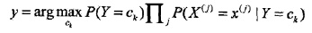
后验概率最大化的含义
选择0-1损失函数：
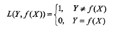
f(X)就是分类器的决策函数，损失函数的参数其实是一个联合分布。
此时期望风险函数为：
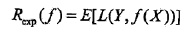
上面说过，这是一个联合分布P(X,Y)，是一个and（连乘）的形式，由此取条件期望为风险函数：
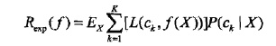
所谓条件期望，就是指X=x时，Y的期望。上式其实可以这么推回去：
Ex∑[L()]P(ck|X)=∑P(X)∑[L()]P(X,ck)/P(X)=∑[L()]P(X,ck)=E[L()]
格式比较乱，但愿意思到了。
为了最小化上式，只需对每个X=x执行最小化，那么加起来肯定是极小化的，由此有：
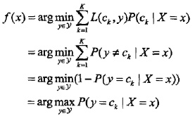
其实不用这么一堆公式，光靠感觉也很好理解，给了一些证据后，不挑后验概率最大的，还能挑啥呢？
朴素贝叶斯法的参数估计
极大似然估计
前面说过，朴素贝叶斯法要学习的东西就是P(Y=ck)和P(X=x|Y=ck)，这两个概率的估计用极大似然估计法（简单讲，就是用样本猜测模型参数，或者说使得似然函数最大的参数）进行：
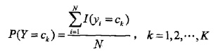
也就是用样本中ck的出现次数除以样本容量。
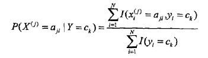
分子是样本中变量组合的出现次数，分母是上面说过的样本中ck的出现次数。
学习与分类算法
于是就有朴素贝叶斯算法，先从训练数据中计算先验概率和条件概率，然后对于给定的实例计算最大的条件概率，输出该条件对应的类别。形式化的描述如下：
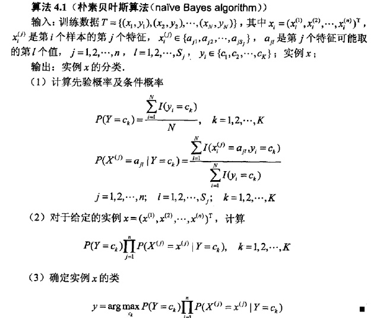
例子
给定训练数据：
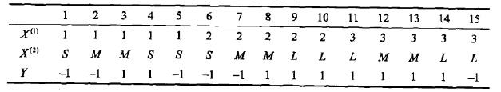
给x=(2,S)T分类。
这个太简单了，利用（3）中的式子就行了。
贝叶斯估计
最大似然估计有个隐患，假设训练数据中没有出现某种参数和类别的组合怎么办？此时估计的概率值为0，但是这不代表真实数据中就没有这样的组合。解决办法是采用贝叶斯估计
1、条件概率的贝叶斯估计：
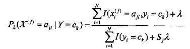
其中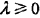，Sj表示xj可能取值的种数。分子和分母分别比最大似然估计多了一点东西，其意义是在随机变量每个取值的频数上加一个常量。当此常量取0时，就是最大似然估计，当此常量取1时，称为拉普拉斯平滑。
2、先验概率的贝叶斯估计：
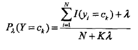
贝叶斯情感极性分析器
书中例题太简单，不过瘾。这里分析一个基于贝叶斯文本分类器实现的简单情感极性分析器。
调用实例：
- # -*- coding:utf-8 -*-
- # Filename: Bayes.py
- # Author：hankcs
- # Date: 2015/2/6 22:25
- from math import log, exp
- class LaplaceEstimate(object):
- """
- 拉普拉斯平滑处理的贝叶斯估计
- """
- def __init__(self):
- self.d = {} # [词-词频]的map
- self.total = 0.0 # 全部词的词频
- self.none = 1 # 当一个词不存在的时候，它的词频（等于0+1）
- def exists(self, key):
- return key in self.d
- def getsum(self):
- return self.total
- def get(self, key):
- if not self.exists(key):
- return False, self.none
- return True, self.d[key]
- def getprob(self, key):
- """
- 估计先验概率
- :param key: 词
- :return: 概率
- """
- return float(self.get(key)[1]) / self.total
- def samples(self):
- """
- 获取全部样本
- :return:
- """
- return self.d.keys()
- def add(self, key, value):
- self.total += value
- if not self.exists(key):
- self.d[key] = 1
- self.total += 1
- self.d[key] += value
- class Bayes(object):
- def __init__(self):
- self.d = {} # [标签, 概率] map
- self.total = 0 # 全部词频
- def train(self, data):
- for d in data: # d是[[词链表], 标签]
- c = d[1] # c是分类
- if c not in self.d:
- self.d[c] = LaplaceEstimate() # d[c]是概率统计工具
- for word in d[0]:
- self.d[c].add(word, 1) # 统计词频
- self.total = sum(map(lambda x: self.d[x].getsum(), self.d.keys()))
- def classify(self, x):
- tmp = {}
- for c in self.d: # 分类
- tmp[c] = log(self.d[c].getsum()) - log(self.total) # P(Y=ck)
- for word in x:
- tmp[c] += log(self.d[c].getprob(word)) # P(Xj=xj | Y=ck)
- ret, prob = 0, 0
- for c in self.d:
- now = 0
- try:
- for otherc in self.d:
- now += exp(tmp[otherc] - tmp[c]) # 将对数还原为1/p
- now = 1 / now
- except OverflowError:
- now = 0
- if now > prob:
- ret, prob = c, now
- return (ret, prob)
- class Sentiment(object):
- def __init__(self):
- self.classifier = Bayes()
- def segment(self, sent):
- words = sent.split(' ')
- return words
- def train(self, neg_docs, pos_docs):
- data = []
- for sent in neg_docs:
- data.append([self.segment(sent), u'neg'])
- for sent in pos_docs:
- data.append([self.segment(sent), u'pos'])
- self.classifier.train(data)
- def classify(self, sent):
- return self.classifier.classify(self.segment(sent))
- s = Sentiment()
- s.train([u'糟糕', u'好 差劲'], [u'优秀', u'很 好']) # 空格分词
- print s.classify(u"好 优秀")
输出
- (u'pos', 0.6666666666666665)
说明“好优秀”这句话具有正能量的概率是66%，虽然“好”这个词语也存在于负极性的语句中，但是分类器还是准确地区分了它。
上面的贝叶斯分类器使用了拉布拉斯平滑处理策略，在进行条件概率的时候，不是连乘，而是取对数相加，最后逐差取指数，这个过程会发生归一化，得出一个概率出来。
Reference
情感极性分析器主要参考了snownlp的实现。
推出来了。。博主，我刚刚开始研究ml，公式能看懂，但是转化成代码，有些困难，希望你可以给一些建议~
博主，代码里面第78行，是如何推导的啊？推了好久，没弄明白。。
请问，怎么对文本信息进行分类
s = Sentiment()
我想知道的是楼主学概率论和高数么？明明是文科生为什么这些公式理解起来这么轻松啊。。
学是学过，早忘光了，基本现学的。我是个怪物。
真的好牛b，膜拜！！！！